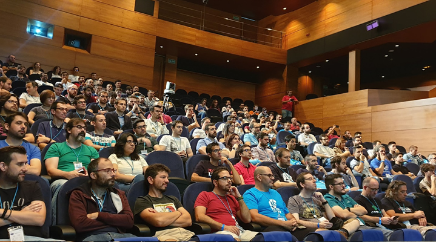

PulpoCon 20 la conferencia que se celebrará en Vigo el 5 de Septiembre de 2020 y de nuevo acercará el movimiento “crafter” y el “clean code” a la comunidad de desarrolladores de Galicia y su área de influencia.
Técnicas, arquitecturas y modelos que fomentan mejores profesionales más allá del lenguaje utilizado.
Con reconocidos ponentes de gran prestigio nacional e internacional.
Síguenos y te mantendremos informado
PulpoCon19
En 2019 PulpoCon, en su primera edición, reunió a más de 200 personas.
PulpoCon 19Call for Papers
Tanto si eres de Galicia como si no, si quieres y tienes algo que contarnos sobre todo lo que rodea al "clean code" y los "crafters" queremos escucharte... XP, TDD, BDD, Agile, Refactoring, Event Sourcing, y mucho más!!!
Ubicación
Auditorio Sede Afundación Vigo
c/ Policarpo Sanz, 24 - 26, Vigo. 36202, Pontevedra


- Autobús urbano
Líneas: C3, CAC, C7, L11, 12B, C4A, C5A, C4B, L8, C5B, 12A, C9A. L17, C9A, C15C. Calcular ruta